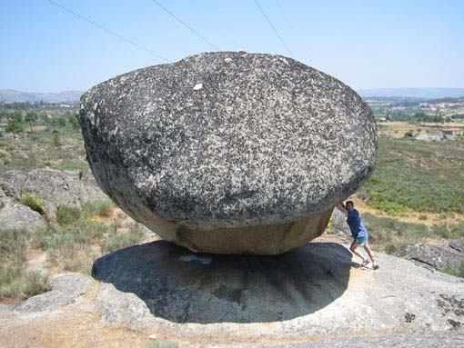
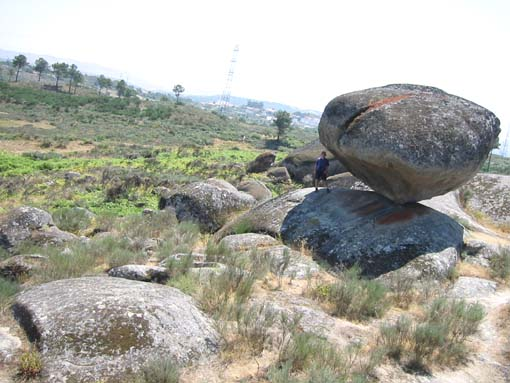
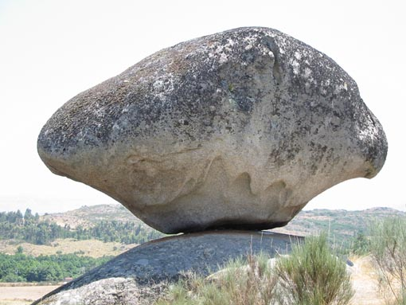
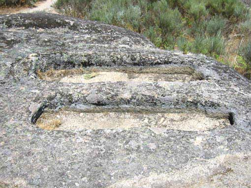

 
ufff .. težko je. Poskušam spravit kamen iz ravnotežja. Baje se ga da zibat z roko, ampak mi nismo bili dovolj močni. Ta zanimiva granitna skala se nahaja v bližini mesta Celorico da Beira.
V okolici skale so v granitna tla sklesani grobovi Vizigotov (spodaj levo).
 